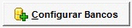

Instalação ECF |
  
|
Instalação ECF |
|
Instalação ECF |
|
Modelo este campo é aberto uma janela relacionando todas as impressoras que o sistema já possui driver de comunicação, informe o modelo correspondente. Caso a sua não esteja relacionada é porque ela não possui driver configurado no sistema.
Alguns procedimentos necessários para o funcionamento da impressora, serão descritos a seguir.
Dados ECF |
|
Cada ECF tem sua particularidade para uso e instalação. Porém há campos que são obrigatórios EX.:
1) |
Modelo -> Selecione o modelo e faça instalação necessária para o modelo selecionado. |
2) |
Tipo de Arredondamento -> Cada Impressora trabalha como arredondamento diferente. Deve ser verificado com qual o arredondamento o ECF está configurado. |
3) |
Tipo de Desconto (Item) -> Este paramento serve tanto para ECF quanto para Pedido Simplificado. |
4) |
Número Serial do ECF -> Deve ser preenchido SEMPRE que estabelecimento tiver mais de um equipamento. Este campo será usado para Sped, Sintegra e Conecção Offline |

1)Parametrizar Estação:
a)ECF
i)Identificar Modelo de ECF
ii)Informar Porta < Se deixar em branco ira utilizar a porta informada no arquivo BemaFI32.ini>
iii)Numero de serial do ECF < Usado também para Sped/Sintegra>
b)PAF:DAV
i)IPI do Servidor DAV < IP da maquina do servidor FibServe>
ii)Porta < Porta de comunicação com Fibserve>
iii)Porta contingencia. <Padrão, 9005>
2)Registrar Moedas
a)Da ECF para o Sistema < Com a mesma grafia, que estiver na ECF>
b)Do Sistema para ECF < Quando a ECF for Nova>
i)Moeda 1º - DINHEIRO; 2º - Cheque.
ii)Limite de MOEDAS
❖Bematech = 30 (Térmicas e Matricial)
❖Daruma = 20 (térmicas) e 16 (Matricial)
3)O seguinte procedimento (Passo-a-passo) deve ser adotado em todos os clientes que usam PAF-ECF:
a) Todos os arquivos *.DLL, *.SYS, *.INF, *.TLB, DarumaFramework.Xml e Bemafi32.Ini que estiverem na pasta do sistema devem ser movidos para uma das pastas:
❖Windows 32 bits -> \Windows\System32
❖Windows 64 bits -> \Windows\SysWOW64
➢Obs.: Caso os arquivos já existam na pasta referida, devem ser sobrescritos.
➢Obs2.: Não deixar nenhuma cópia destes arquivos em nenhuma outra pasta a não ser a que foi mencionada acima e na pasta "\conttroller\Instalar"
b)Excluir o arquivo "DARUMA32.DLL" da pasta mencionada no item 1.
c)Se o cliente usa um ECF Bematech realizar o seguinte procedimento:
i)Deve-se alterar o arquivo "DarumaFramework.xml" nas chaves abaixo com os valores mencionados:
✓ECF\ControleAutomatico = 1
✓ECF\EncontrarECF = 0
✓ECF\PortaSerial = COM11
➢Obs.: Editar e verificar se a versão do arquivo "BemaFI32.ini", que se encontra dentro do próprio arquivo, é a "ver 6.1.1.0 - Outubro/2012". Se não for deve ser atualizada pela que está na pasta "\conttroller\instalar".
d)Se o cliente usa ECF Daruma não realizar as alterações mencionadas no item 3 mas realizar a seguinte alteração no arquivo "Bemafi32.ini":
Alterar a porta para COM11
4)Parametrizar S.O. (ALTERAÇÃO IMPORTANTE)
Se o sistema está sendo executado num sistema operacional Windows Vista, Windows 7 ou Windows 8 proceder com os seguintes passos:
(1)Clicar em Iniciar \ Executar e digitar a seguinte expressão: "secpol.msc" e aguardar a abertura da janela "Diretiva de Segurança Local"
(2)Na janela que se abre, localizar e abrir a pasta "Diretivas Locais\Opções de segurança".
(3)Na lista que aparece ao selecionar a pasta indicada localizar o item:
(a)"Controle de Conta de Usuário: virtualizar falhas de gravação de arquivos e Registros para locais por usuário".
(4)Clicar duas vezes no item mencionado acima.
(5)Na janela que se abre, sob a aba "Configuração de Segurança Local" clicar em "Desabilitado" e depois em "OK"
(6)Reiniciar o computador. (ESTA ETAPA NÃO PODE, EM HIPÓTESE ALGUMA, SER IGNORADA).
Observações gerais:
1 - Os passos acima mencionados só serão executados uma única vez por estação. Seguindo cuidadosamente cada passo, independente de qual ECF o cliente esteja usando, o sistema não deve mais apresentar problemas de conexão com o ECF por causa de arquivos de configuração ou das "dlls" dos respectivos fabricantes. Portanto qualquer problema deste gênero deve ser comunicado a Programação em caráter imediato.